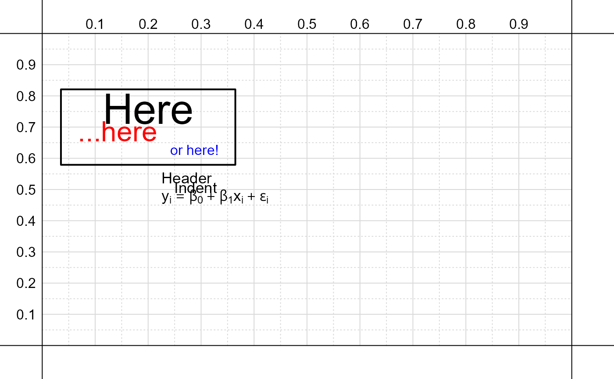

add_lines_of_text.RdA function to add multiple lines of text simultaneously to an existing path diagram.
add_lines_of_text(
string,
x = 0.5,
y = 0.5,
spacing = 0.8,
spacing.fixed = F,
shape.pad = 0.5,
shape.pad_first = T,
align = "left",
cex = 1.1,
col = "black",
offset = 0,
output = FALSE,
shape = "blank",
shape.col = "white",
shape.lwd = 2,
shape.border = "black",
shape.lty = 1,
shape.x = NA,
shape.y = NA,
xpd = NA,
ignore_asterisk = TRUE,
add = TRUE,
...
)A vector of character strings to add to an existing plot.
The x-axis coordinate to place all lines of text.
The y-axis coordinate for the top line of the text.
The spacing between lines of text, either as a percentage of the text height or as a fixed amount.
Logical; if TRUE spacing
between lines will be by a fixed amount rather
than a percentage.
The percentage of the text dimensions to use when padding the width and height of the box around the text.
Logical; if TRUE
pad width and height of box around text based on
the dimensions of the first line of text. Otherwise,
pad based on the dimensions of the final line of text.
A vector giving the alignment of the text,
either left, right, or center.
Values are recycled to match the number of lines.
A vector giving the size of the text. Values are recycled to match the number of lines.
A vector giving the color of the text. Values are recycled to match the number of lines.
Logical; if TRUE return list
of coordinates for box around text.
The default shape for nodes, either 'box', or 'circle'.
The fill color for the node.
The line wide for the node border.
The mode border color
(NA will suppress the border).
The line type for the node.
The fixed width for the x-axis.
The fixed height for the y-axis.
Logical; if TRUE ignores
asterisks for dimension purposes since they are used
to indicate bold/italic font.
Logical; if TRUE adds nodes (and
paths if specified) to an existing figure.
Additional arguments to the
text function.
# Empty figure
create_base_figure()
# Several lines of text
string = c(
'Header',
' Indent',
expression( y[i] == beta[0] + beta[1]*x[i] + epsilon[i] )
)
# Add lines to figure
add_lines_of_text( string )
# Additional lines of text
string = c(
'Here',
'...here',
'or here!'
)
# Vectorized options for size, color,
# and alignment
nd = add_lines_of_text(
string, x = .2, y = .7,
cex = c( 3, 2, 1 ),
col = c( 'black', 'red', 'blue' ),
align = c( 'center', 'left', 'right' ),
output = T,
xpd = NA
)
# Draw box around text
add_node_shape( nd, shape.col = NA )
